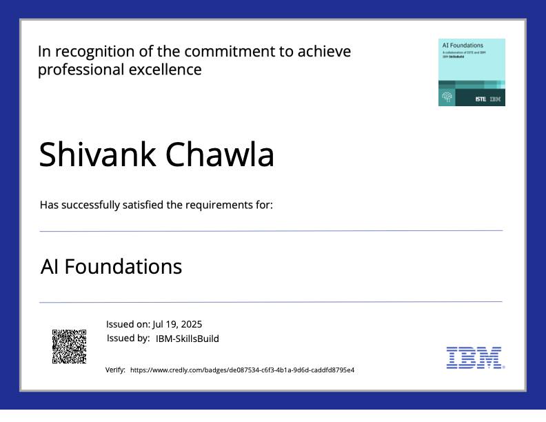
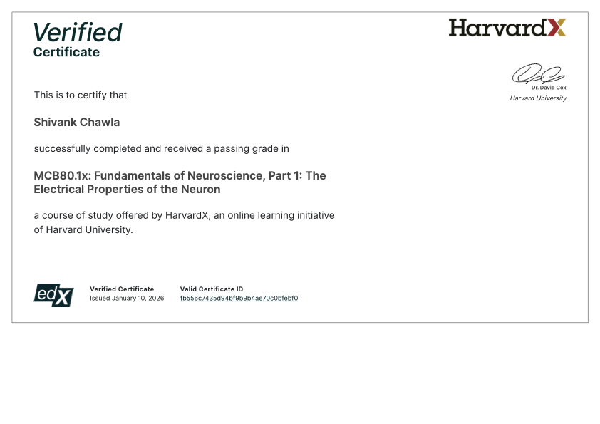
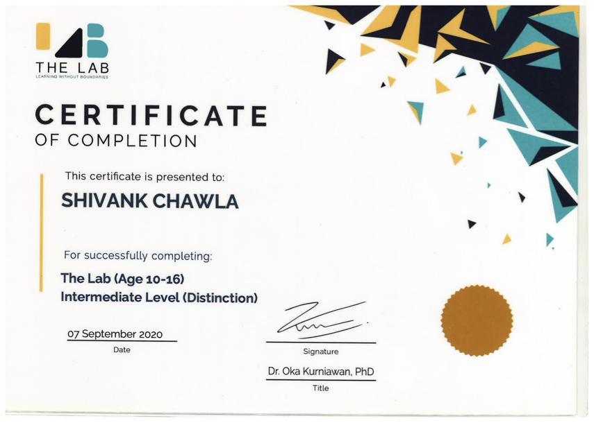
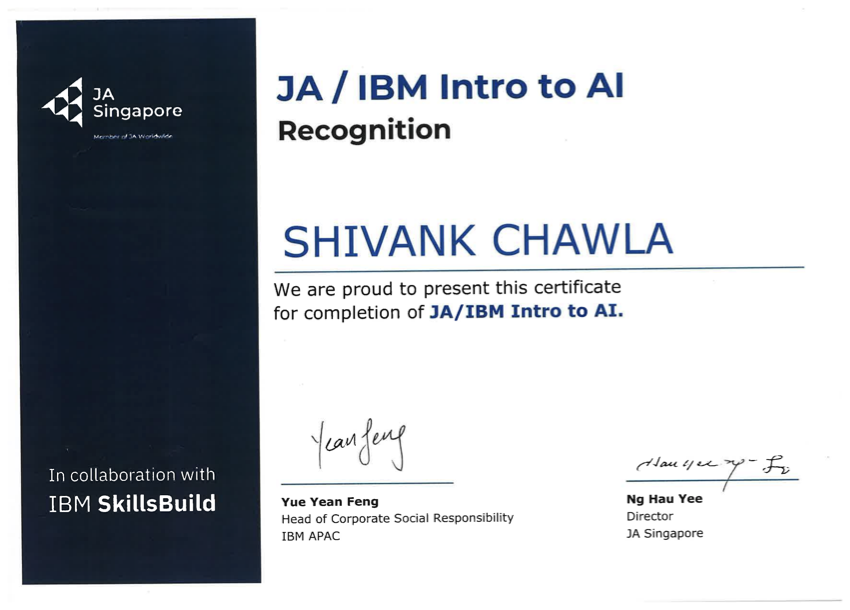
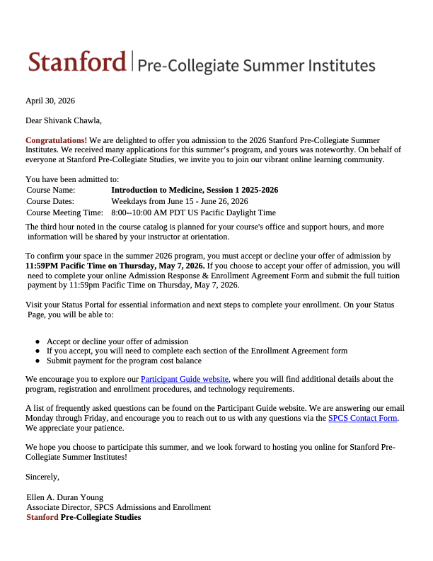
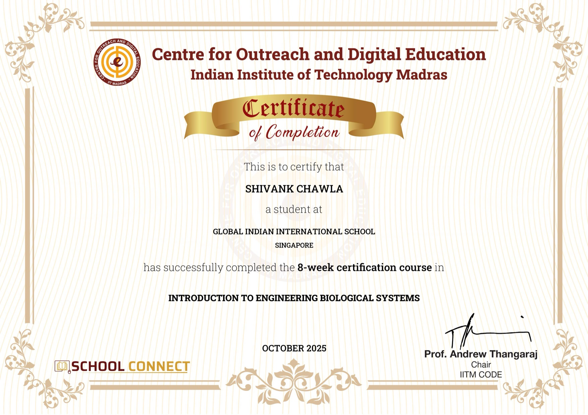

Certifications
[A short intro line about the certifications below — to fill in.]

IBM SkillsBuild
Completed Jul 2025

HarvardX
Completed Jan 2026

The Lab
Completed Sep 2020

JA Singapore & IBM SkillsBuild

Stanford Pre-Collegiate Studies
Admitted Apr 2026

IIT Madras
Completed Oct 2025 · 8 weeks